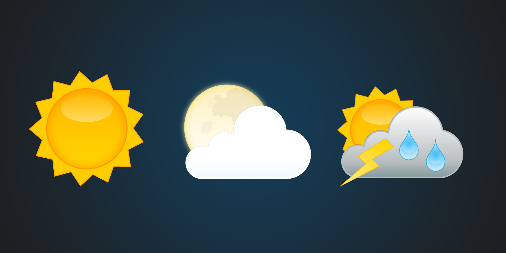

Your current location:
 I am hungry!
I am hungry! Places Worth Visting
Places Worth Visting| Restaurant | Address | Rating | Open Now? |
|---|

I am sorry. But since history of a place can date way back, I could not find a suitable API
which can pull history data of a place!
Apologies for any inconvienience caused.
Apologies for any inconvienience caused.
| Place | Address | What is it? | Open now? |
|---|